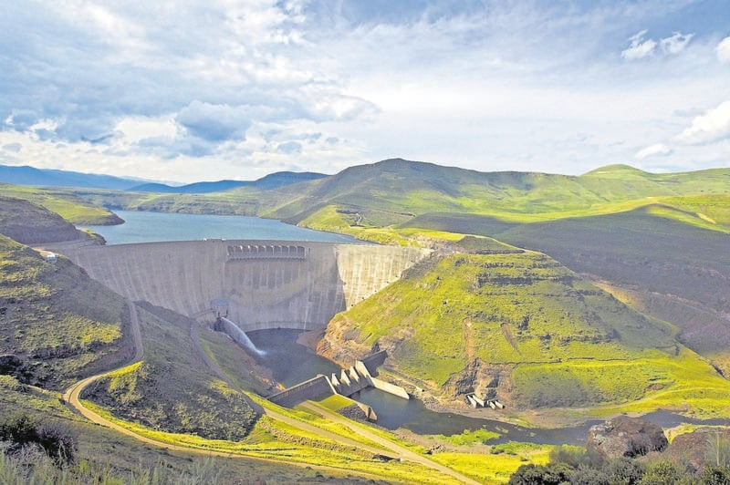

Katse Dam Lesotho
The second highest dam in Africa.
Learn MoreThe second highest dam in Africa.
Learn MoreThe city of Angels.
Learn More
A movable bridge connecting London Tower to City Hall.
Learn More
The unique flora and fauna found on the mountain are like nothing else in the world, and there are numerous hiking trails to explore.
Learn More